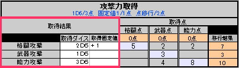

⑨攻撃力を算出する。BACK＜＜ ＞＞NEXT攻撃には【格闘】、【武器】、【能力】の３種があります。
▼まずはそれぞれの攻撃力取得点を算出します。
▼算出した取得点を使ってキャラクターの攻撃力を決定します。
なお、各攻撃方法で固定値の取得条件が存在するので、
|
||||||||||||||||||||||||||
又、以下の条件で各取得点は他取得点に移行する事ができます。
各取得点は２点分を別の攻撃力の取得点１点として扱う事が可能。
なお、このルールを適用する場合、
能力攻撃の最低ダイス数は２ｄとなる。
↓エクセルシートの記入方法は以下の様になります。 
◆攻撃力【 ２Ｄ６＋２ 】
⇒ ２Ｄ６で取得点６点消費、固定ダメージ２で２点消費
◆攻撃力【 １Ｄ６＋３ 取得点２点分を他の取得点１点に移行 】
⇒ １Ｄ６で取得点３点消費、固定ダメージ３で３点消費、取得点移行で２点消費
◆攻撃力【 １Ｄ６＋１ 取得点４点分を他の取得点２点に移行 】
⇒ １Ｄ６で取得点３点消費、固定ダメージ１で１点消費、取得点移行で４点消費
上記バリエーションの中から取得できる。
※武器・能力攻撃の場合は１ｄ＋５も取得可能。